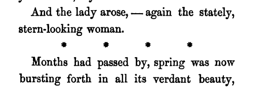

![[Put logo here]](media/logo.jpg)
Encoding for ELTeC : a summary guide
Part 2 : the Text
The checklist
Here's a list of the distinctions your encoding should make explicit:
- page breaks (<pb>) [optional]
- section and chapter divisions (<div>)
- headings, titles, footers (<head>,<trailer>)
- paragraphs (<p>)
- verse (<l>)
- typographic salience (<hi>) [optional]
A level 1 encoding permits the following additional distinctions, all optional but recommended:
- omitted material(<gap>)
- editorial correction (<corr>)
- chapter subdivision (<milestone>)
- linguistic emphasis (<emph>)
- code-shifting (<foreign>)
- floating headings and titles (<label>, <title>)
- quotation (<quote>)
- authorial notes (<note>, <ref>)
A note on page breaks
- ELTeC transcription need not capture any aspect of a book's original appearance, including its pagination.
- However,
- identifying a page number is useful when checking the encoding against an original
- identifying all page breaks can also facilitate some kinds of analysis.
- Use <pb/> to mark the start of each new page or <pb n="x"/> for the page numbered x in the source.
- If a word is hyphenated across a page break, re-assemble it on the page where it begins
- Discard any catchword, running page header or footer, etc.
The text itself
<text>
<front>
<div type="titlepage">...</div>
<div type="liminal">...</div>
</front>
<body>
<div type="chapter">....</div>
</body>
<back>
<div type="notes">...</div>
</back>
</text>
- Find the first and last chapters of the novel: everything before this is the <front>, everything after is the <back>, everything in between is the <body>.
- Discard any non-authorial sections from front or back
- Use <div>, with an appropriate type to mark remaining sections
- Use <div type='titlepage'> for the titlepage
- Use <div type='liminal'> for any other subdivision of front or back
- Use <div type='chapter'> for chapters
- Use <div type='group'> for groupings of chapters
- Use <div type='letter'> for epistolary novels
- Use <div type='notes'> within the back for notes
Headings and footers
- Use <head> for each heading or title provided at the beginning of a section, and <trailer> for each provided at the end
- Discard running titles or page headers
Prose and verse
At level 0, the element <p> is used for any stretch of prose text followed by a significant line break. It is usually, but not necessarily, a complete syntactic unit.
The element <l> should be used for each distinct line of verse, where this is clearly not prose, as in for example a song or an epigraph.
At level 1, quoted paragraphs or quoted verse may be wrapped in a <quote> element.
Typographic salience
- An ELTeC transcription need not capture any aspect of a book's original appearance, including its typography.
- However, it is often useful to distinguish (e.g.) italicized words or phrases because this usage may have a semantic implication.
- At level 0, we record simply that such words are typographically salient, using the <hi> element with no attributes
- At level 1, we may instead capture the semantic implication, using e.g. <emph> or <foreign>.
Omissions and corrections
At level 0, material which has been omitted from a transcription is simply omitted, and any editorial corrections to the text are silently applied.
At level 1, we record the fact that something has been omitted using the <gap> element, and the fact that some text has been corrected using the <corr> element.
<gap desc="graphic"/>
<p>... and so <corr>indubitably</corr> preferable .. </p>
Sub-divisions of chapters

Do not use <div> for subdivisions of chapters: instead mark the point at which the subdivision is indicated with a <milestone> element, using its unit attribute to indicate the kind of subdivision concerned, and (optionally) its rend attribute to indicate the appearance of the milestone.
At level 0, a milestone indication such as a row of stars may be retained as a <p>, but this should be changed at level 1.
At level 0:
<p>... stern-looking woman.</p>
<p>* * * *</p>
<p>Months had passed by .... </p>
At level 1:
<p>...stern-looking woman.</p>
<milestone unit="subchapter" rend="stars"/>
<p>Months had passed by... </p>
Emphasis and code switching
At level 1, emphasized words in speech or narrative may be marked using <emph>.
You said <emph>what</emph>?
At level 1, code switching (use of a language other than that of the main narrative) may be marked using
<foreign> The xml:lang attribute may optionally be used to specify the language switched to, but is not obligatory
Floating headings and titles
At level 1, headings or labels not attached to a division should be marked using
<label> At level 1, titles of songs, literary works, etc. may optionally be marked using
<title>.
Quotation
- At level 1, passages such as epigraphs or quoted songs, may be marked using <quote>.
- Do not however use <quote> for quoted phrases within a paragraph: simply retain the quotation marks (similarly, for direct speech)
- A citation e.g. giving the author of a quotation can be marked using <label> or as a free-standing <p>
Authorial notes
At level 0, all notes are omitted. At level 1 :
- Only authorial notes should be retained. Editorial or textual notes should be silently omitted
- The content of the authorial note should be marked using <note>
- The siglum indicating the point of attachment for the note within the text should be marked using <ref>
- All <note> elements should be given a unique identifier (e.g. use the text identifier followed by "N" and a number) as value for their xml:id
- All <ref> elements should indicate the note they refer to by means of their target attribute
- All <note> elements should be collected together in the <back> element, inside a <div type="notes">, no matter where they appear in the source
<body>
<div type="chapter">
<p> .... <ref target="#EN042N01">[1]</ref>
</p>
</div>
</body>
<back>
<div type="notes">
<note xml:id="EN042N01">Or so they say.</note>
</div>
</back>